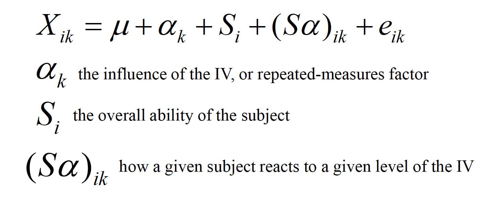
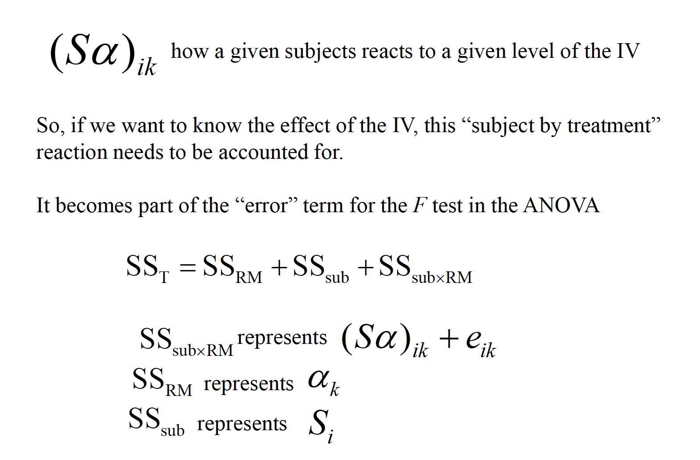
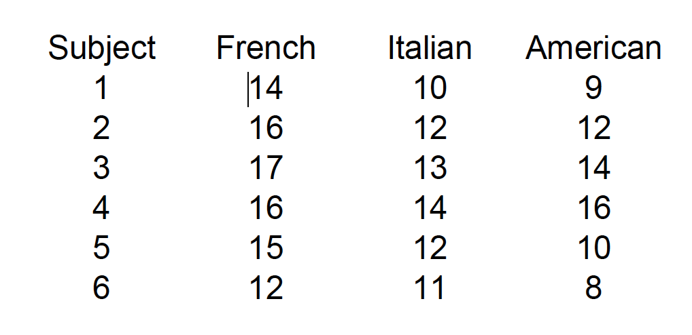
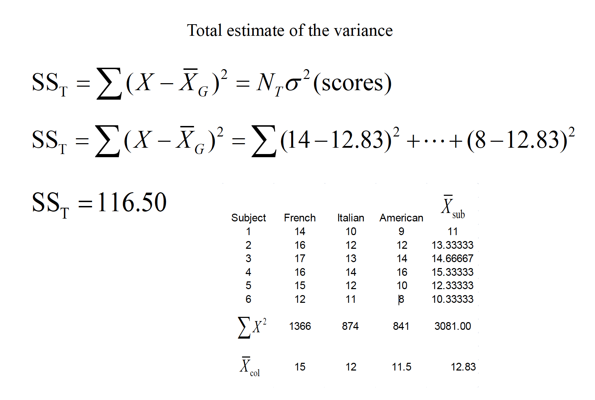
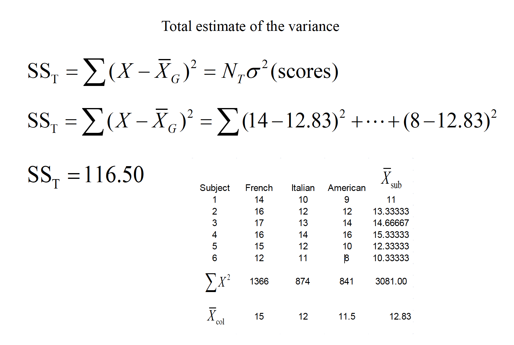
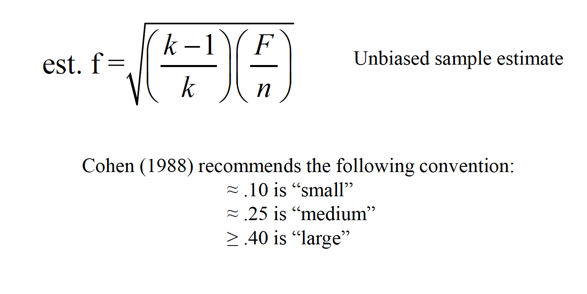
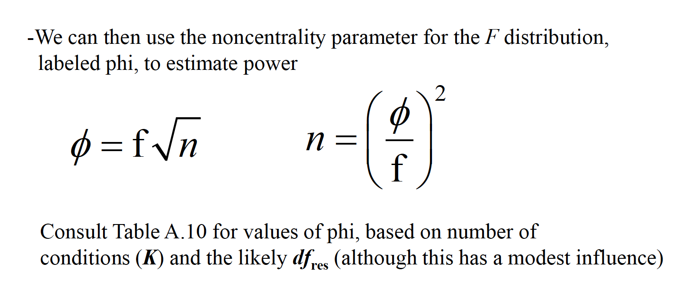
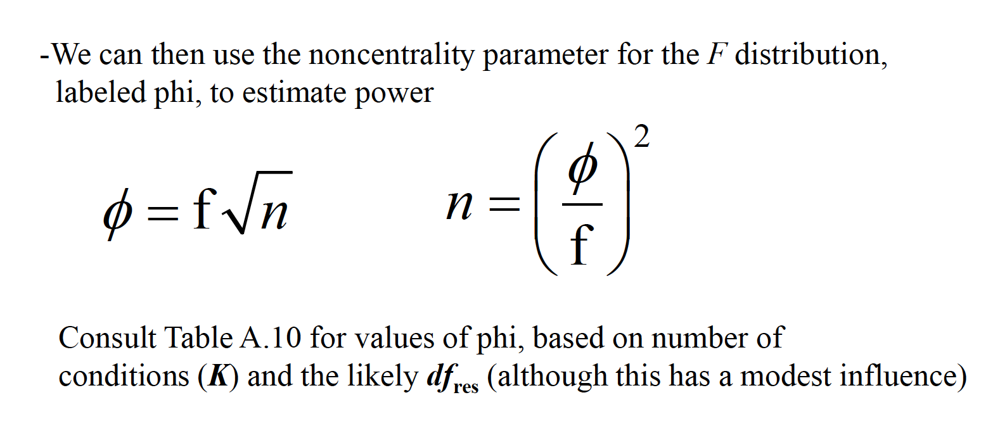

Chapter 15 Repeated Measures ANOVA:
- Repeated measures designs are those in which subjects are tested in each level of the independent variable. 2.The conceptual difference is that repeated measures designs allow for the separate estimation of the influence of individual differences from participant to participant, whereas between subject designs do not. 3.The repeated measures design is more economical and contains more statistical power as compared to its counterpart. 4.The assumptions of the repeated measures ANOVA 5.Power and effect size
The linear model includes two more components, the source of an individual’s performance across the entire study and how an individual interacts with the treatment levels:
  
This ability to isolate the source of individual differences allows us to further reduce the error variance (i.e., the denominator of the F ratio).
\(F = \frac{MR_{RM}}{MS_{sub x RM}}\)
Variability due to subjects is taken into account, but then ignored in the computation of F.
rma
A consumer psychologist is interested in the effect of label information on the perceived quality of wine. Six individuals are asked to rate 3 different wines a scale of 1 to 20, with higher scores being a better quality. The wines were labeled as French, Italian, or American, but the wine was identical across the conditions. The results are shown below:
  
 


15.1 Assumptions of RMANOVA
- Sample randomly selected from the population
- The DV is normally distributed in the population
- Sphericity: the variances of difference scores from all possible pairs of conditions are equal

rma

rma

rma
If sphericityis violated, there are several avenues to correct for it that involve applying a correction for the Epsilon value (ε) In SPSS, you’ll see the following in the within-subject ANOVA output: Lower bound correction—this is a change to the critical Fvalue from df= K–1, (n–1)(K–1) to df= 1, n–1. This severelyincreases the critical Fvalue to 6.61 in our case. Huynh & Feldtand Geisser-Greenhouse are corrections to the dfbased on the degree of violation to sphericity, and create more modest corrections to the critical Fvalue. The non-corrected dfare multiplied by the epsilon values for each respective procedure.
If none of the Fs is significant, don’t worry about these corrections—fail to reject the null. If all of the Fs are significant, then reject the null. If one/some of the “corrected” Fs is significant but others are not, then most advocate the Huynh & Feldtcorrection (it’s not as conservative as the lower bound). Field text advocates averaging the G-G and H&F estimates—for a rule of thumb, average the significance values of these estimates
15.2 Effect Size
An effect size measure, f, is used to represent the population SD between groups from the grand mean, versus population SD within a group
  
